常用算法¶
- Epsilon-Greedy
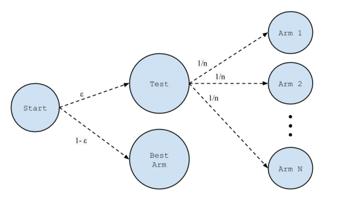
- 优点 简单直观
- 缺点 随意启发，没有利用结构化信息（虽然可让 epsilon 递减，但利用的信息仍然有限）
- UCB1
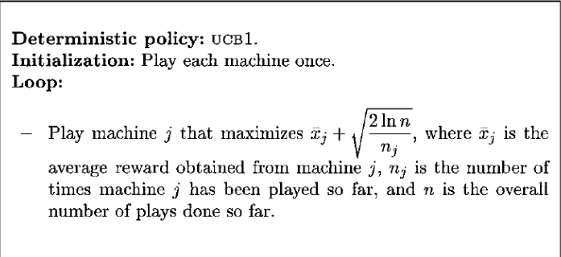
- Softmax
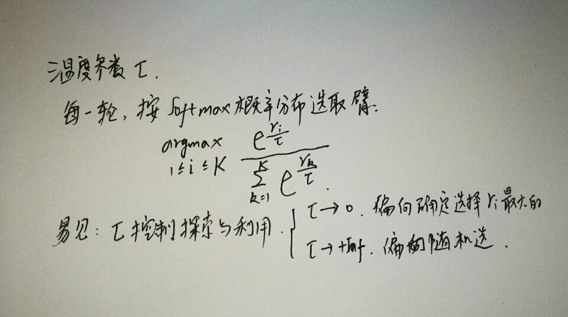
其中，beta 是学习率参数
Pursuit
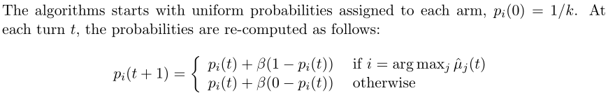
Thomas Sampling
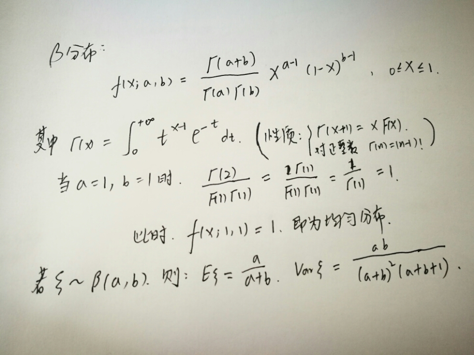
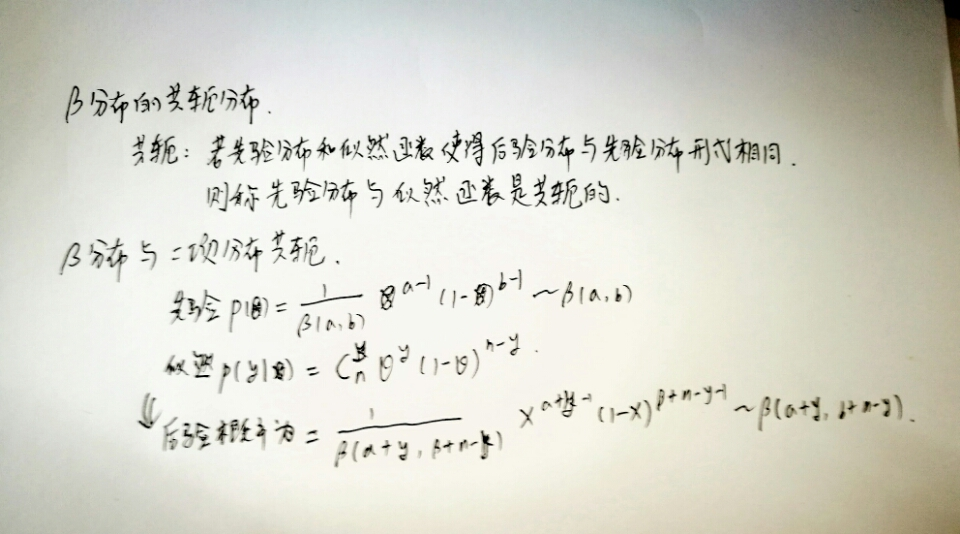
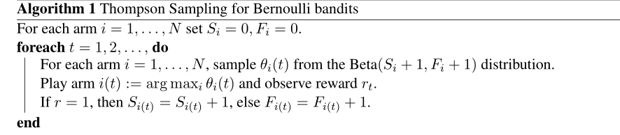
EXP3
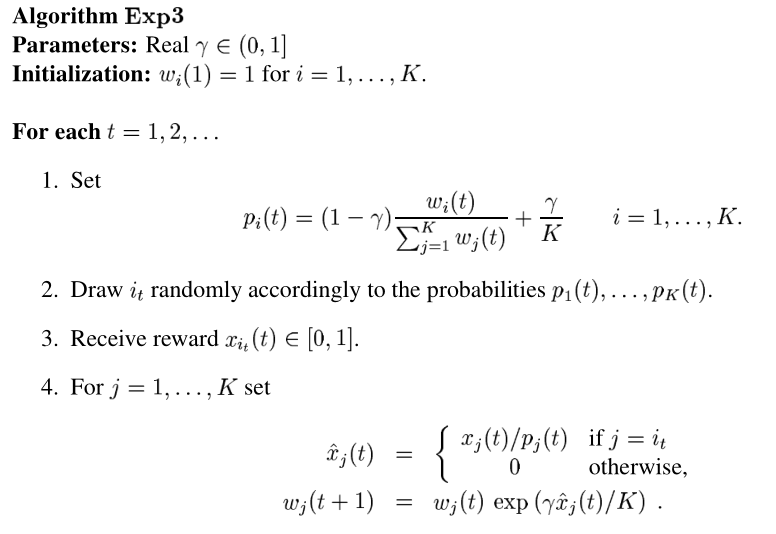
-
class
policies.exp3.EXP3Policy(args)¶ Exponential-weight algorithm for Exploration and Exploitation
权重和随机性之间，用参数 \(\gamma\) 协调
-
class
LinUCB
上下文相关老虎机算法，即我们利用一些场外信息（附加上下文信息）来辅助决策。
主要假设： 每个臂的回报的期望是上下文的线性函数(linear stochastic bandits)
可以证明： 至少以概率 1-delta 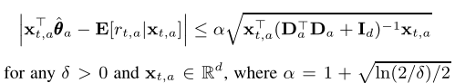
求解算法如下
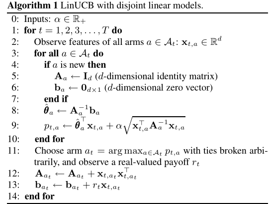
disjoint: 不同臂的参数不共享
Bootstrap Bandit
通过 Bootstrap 的方式，估计参数以及回报，取使得预估回报的某个分位点最大的臂
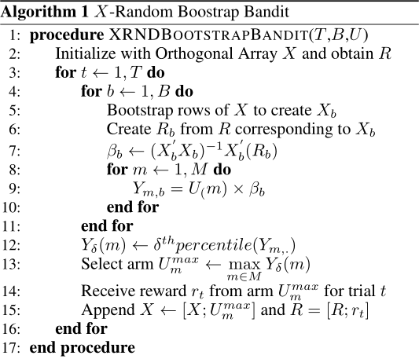
其中B为bootstrap次数，R为回报向量，X为特征矩阵，M为臂的个数，U为臂的集合
- Collaborative Filtering with Bandit
- CoLin
Contextual Bandits in A Collaborative Environment(to read)
- COFIBA
Collaborative Filtering Bandits